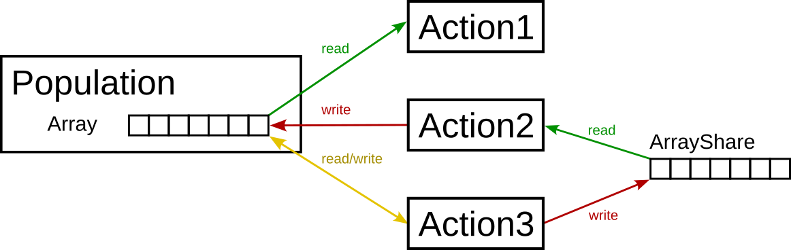
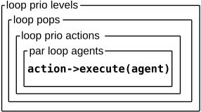

Actions and Priorities¶
Actions¶
Every population object has one or more actions (except for the trivial population).
Some actions only access or modify data from an agent (e.g. OldAgeDeath, Fertility), whereas other actions modify the states of several agents (e.g. RandomPair).
Other actions interact with the environment or agents of other populations.
Apart from having access to the grid and the agents of a population, acctions can exchange data via arrays - either arrays provided by the population, or by means of shared arrays.
All actions are derived from the base class Action (some actions are described in more detail in the chapter actions )
Priorities¶
The order in which actions are executed is often important. For example, agents must be paired before they can make offspring, or, obviously, an agent should move before it dies (and not vide-versa). To handle this issue, each action of a population has a priority level assigned to it (when starting a simulation from scratch, the priority levels must be set in the xml initialisation file).
In QHG the actions with lower priority levels are executed before actions with higher priority levels. If two actions have the same priority level, the order of execution is undefined.
In each step during the simulation, first the actions with the lowest priority values are applied to all agents, then the action with second fighest priority level are applied to all agents, and so on.
